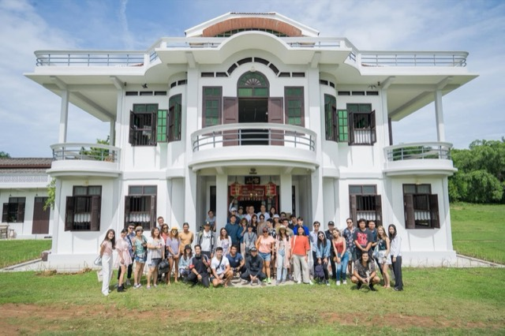

บันทึกปี 2562 2019
7 รายการ
Grand opening บ้านอาจ้อ · TOH DAENG เริ่มต้นกิจการ
11 ธ.ค. 2562
Soft opening บ้านอาจ้อกิจการ
เปิดบ้านอาจ้อครั้งแรก 30 ส.ค. 2562 · พิพิธภัณฑ์ + ร้านอาหาร + คาเฟ่ + โฮมสเตย์ ภายใต้แนวคิด a day in 1936
บ้านอาจ้อรับแขก 60 คนเป็นครั้งแรกกิจการ
